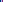
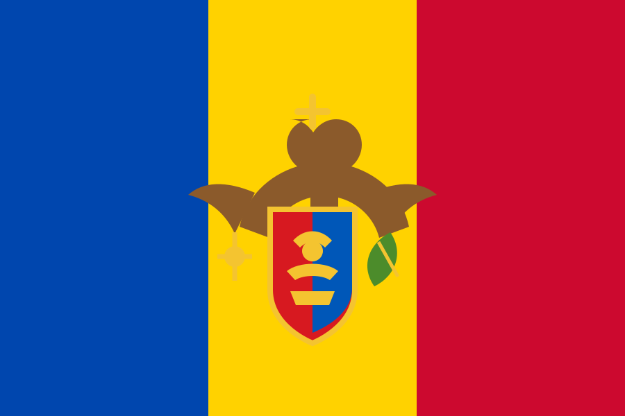
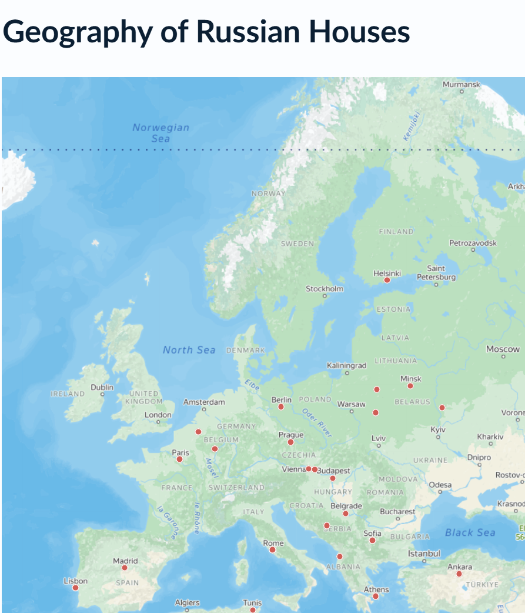

Russian Houses across Europe: How other countries have responded
Germany continues to allow the Russian House in Berlin to operate. Elsewhere in Europe, governments have closed Russian cultural centres, suspended their activities or curtailed official representations. Yet the picture is more complicated than Rossotrudnichestvo’s official presentation suggests. Some countries never had a public-facing Russian House; in others, earlier structures quietly disappeared, or Russia continued its outreach through embassies, associations, schools and hubs in neighbouring countries. These country files examine which tools other governments have used — and what those choices imply for Germany’s handling of the Russian House in Berlin.
Country files at a glance
Eight EU Member States and the Republic of Moldova are now covered; individual treaty details for Bulgaria remain under review. The key findings are visible before each panel is opened. Select a country for the fuller summary; the linked country files provide the complete timeline, legal basis, official statements and source list.

Romania
Operations ended
Residual legal status unclear
Bucharest suspended the centre’s operations in 2023; some formal entries remained.
Bucharest hosted a formally established Russian Centre for Science and Culture under a bilateral agreement signed in 2013. On 21 February 2023, Romania’s Foreign Ministry informed the Russian ambassador that the centre’s activities were being suspended. Operations had to end by 20 August 2023.
The government explicitly cited propaganda, disinformation, distorted accounts of historical facts and attempts to justify Russian war crimes. Bucharest is absent from Rossotrudnichestvo’s current map, although continuing registry entries mean that the residual formal status has not been clarified in every detail.

Republic of Moldova · non-EU
Operations ended
Embassy structure remains active
Moldova terminated the agreement in time; the Russian House closed on 4 July 2026.
The Russian House in Chișinău operated under a 1998 agreement on cultural centres. Article 17 provided for automatic five-year renewals unless either side gave written notice at least six months before the end of the current term. After further Russian drone incursions into Moldovan airspace, the government began the termination procedure in 2025; Russia was formally notified on 3 December 2025.
The agreement expired on 4 July 2026, and the official Russian House ceased operating the same day. Rossotrudnichestvo nevertheless retained a representative inside the Russian embassy, where education quotas and other so-called humanitarian programmes are expected to continue.
Czechia Financially and operationally restricted Programmes still active The property became a sanctions case, while cultural, language and online services continued.
Czechia treated the building and its commercial use as a sanctions matter. Revenue and economic exploitation were heavily restricted. That did not amount to a political closure of the Russian House.
Events, language courses, the library and online services continued. The general cultural agreement also remained in force despite being terminable. The legal framework explains the present intermediate situation; it did not compel the government to preserve it.
 Bulgaria
Official site active
Tax proceedings pending
Sofia acknowledged the potential sanctions implications in 2024; in 2026 a tax audit still had not begun.
Bulgaria
Official site active
Tax proceedings pending
Sofia acknowledged the potential sanctions implications in 2024; in 2026 a tax audit still had not begun.
The Russian Cultural and Information Centre in Sofia remains active. Bulgaria explicitly acknowledged the centre’s potential sanctions exposure in 2024 but did not implement corresponding measures. In 2026 the tax authority found taxable economic activity without the corresponding tax returns and tax payments.
A Sega investigation also documented numerous visits by municipal schools and kindergartens after 24 February 2022. The basement additionally houses the third-party-operated “Fotonika” fighter-aircraft simulator, with offers explicitly available from the age of six.
Poland In-person operations suspended Digital structure remains active Poland did not close it: Rossotrudnichestvo suspended the Warsaw site’s in-person operations in 2026.
Warsaw hosted an official Russian centre. Poland recognised its propaganda and disinformation role but refrained from ordering a state closure, partly because of the Polish Institute in Moscow and the principle of reciprocity.
In February 2026, Rossotrudnichestvo itself suspended in-person operations and shifted responsibilities to Budapest. Digital channels remained active. No documented causal link has been found between a Polish government measure and the Russian withdrawal, and the underlying agreement was not terminated.
 Finland
Financially and legally restricted
Institution still active
Accounts were frozen and the property placed under legal attachment, but the institution remained in place.
Finland
Financially and legally restricted
Institution still active
Accounts were frozen and the property placed under legal attachment, but the institution remained in place.
Finland enforced EU sanctions against Rossotrudnichestvo and froze accounts. The Russian House property was seized or placed under legal attachment in connection with Ukrainian compensation claims in the Naftogaz proceedings.
Enforcement was ordered but has not become final because Russia appealed. The institution nevertheless remained organisationally and digitally active. Finland also left the cultural agreement in force, even though it can be terminated with six months’ notice.
 Denmark
Regular in-person operations ended
Intermittent use reported
A staffing cap ended regular operations in 2023; since 2025 the Russian embassy has reported individual events.
Denmark
Regular in-person operations ended
Intermittent use reported
A staffing cap ended regular operations in 2023; since 2025 the Russian embassy has reported individual events.
Copenhagen hosted an official Russian Centre for Science and Culture. Denmark did not close it through a measure directed specifically at the institution. Instead, in September 2023 it capped the Russian mission as a whole at five diplomats and 20 administrative and technical staff. Regular operations then ceased.
The centre has been absent from Denmark’s diplomatic list since 2024. Russian embassy channels nevertheless began reporting individual events in May 2025 at a venue they continued to call the Russian House or RCSC. That demonstrates intermittent use, not the restoration of the former full-scale Rossotrudnichestvo operation.
 Croatia
No official house established
Tax proceedings pending
Former structure no longer traceable
The planned centre was never implemented by treaty; a later substitute representation disappeared after 2022.
Croatia
No official house established
Tax proceedings pending
Former structure no longer traceable
The planned centre was never implemented by treaty; a later substitute representation disappeared after 2022.
The general cultural agreement between Croatia and Russia did not establish a centre. A separate agreement on information and cultural centres was envisaged in 2013, but in 2015 it was explicitly recorded as not implemented.
Even so, a Rossotrudnichestvo representation can be documented by 2018 and the public brand “Russian House Zagreb” by 2021. After Croatia drastically reduced the Russian embassy in 2022, regular activity was no longer publicly traceable. Later sources referred to suspension, but no Croatian closure act has been found.
Netherlands Former representation disappeared Partner network active No current house, but a decentralised network spanning the embassy, associations, schools and Brussels.
There is no official Russian House in the Netherlands today. An official Rossotrudnichestvo country representation can nevertheless be documented in 2013 and 2014. It apparently had no dedicated public cultural building and had disappeared by 2017 at the latest, well before the full-scale invasion.
Its functions survived in decentralised form through the Russian embassy, the KCOPC/KSORS compatriot council, schools, cultural associations, honorary consulates, the University of Groningen and the Russian House in Brussels. Cooperation by local organisations with Rossotrudnichestvo does not by itself prove financing, ownership or command.
Russia’s own picture of its European network
Rossotrudnichestvo publishes a map of its Russian Houses and overseas representations on its own website. It shows how the agency presents its presence in Europe — and provides the starting point for comparing that presentation with the structures that can actually be documented.

Russia’s official map of Russian Houses — fact-checked
The red dots are meant to identify cities where Rossotrudnichestvo says it operates a Russian House or overseas representation. The map is not, however, a complete or consistently reliable directory.
Comparing it with the agency’s own country pages already reveals discrepancies. Warsaw, for example, has no red dot, even though Rossotrudnichestvo continues to maintain a dedicated website for the Russian House there, complete with an address, contact details and programme areas.
A missing dot therefore does not prove that no Russian structure exists in a country. A centre may have been closed; an earlier representation may have disappeared; or Russia may continue its work through an embassy, schools, associations, partner organisations or a Russian House in a neighbouring country. Conversely, a dot tells us little about the site’s legal form, size, diplomatic status or current level of activity.
That is why the country files go beyond the current location list. They distinguish between official Russian Houses, Rossotrudnichestvo representations, embassy-based structures, Russkiy Mir centres, “compatriot” networks and local partner organisations.
The legal baseline since 2022
The European Union added Rossotrudnichestvo to its sanctions list on 21 July 2022. That did not amount to an automatic EU-wide closure order. Whether a centre could keep operating also depended on property rights, diplomatic status, bilateral agreements and the measures taken by each host state.
The status labels on this page therefore describe what can be documented on the ground — not the label Russia gives an organisation.
The comparison now shows something else as well: a terminable agreement need not become permanent
The eight EU Member States examined so far used very different tools: suspending operations, blocking financial flows, sanctioning property and operators, reducing diplomatic structures, or allowing a weakly rooted substitute arrangement to fade. The Republic of Moldova adds the first European non-EU case in which the treaty-based termination process was carried through in full: the agreement expired and the official Russian House closed.
Moldova also shows the limits of closure. Some education and influence functions can migrate into an embassy or partner structures. The decisive comparison therefore remains broader than “Who closed?” It is: Which legal and political options existed, which were actually used, and which substitute channels remained open?
More country files to follow
The research is ongoing. Country files are reviewed for location history, legal basis, government measures and sources and updated as new findings emerge. In the newly added Bulgaria entry, individual treaty details are explicitly marked as still under review.